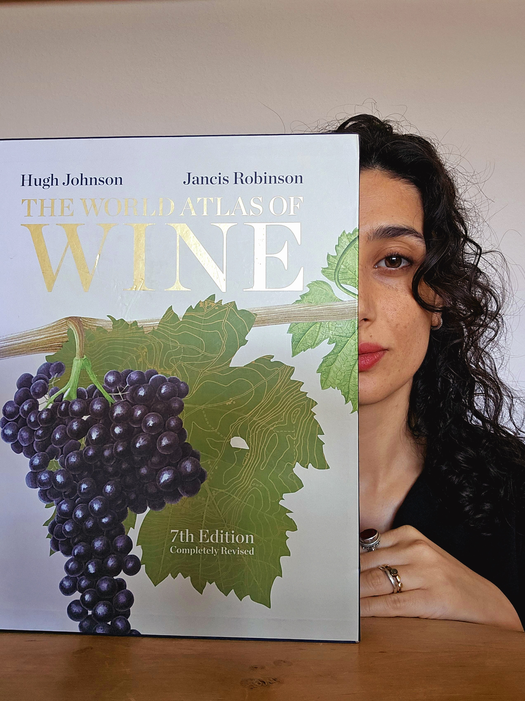
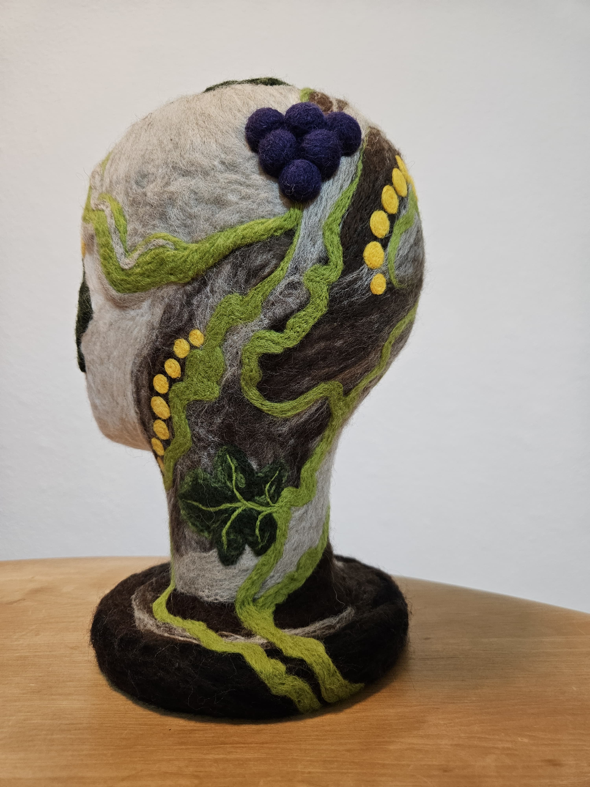
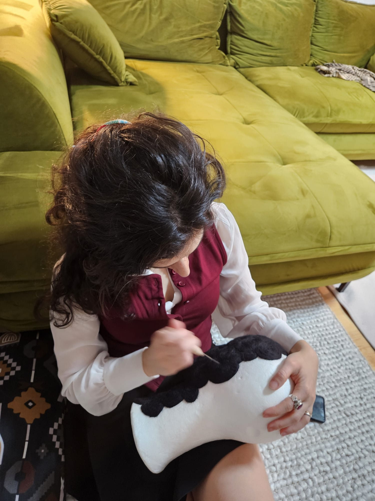

sukaleyan
art historian · feltmaker · vinophile

diving deep into the world of wineWelcome to my corner of the world — a place where art history meets handmade felt, where vineyard rows meet research trails, and where everything connects through wine.
I'm an art historian who followed wine — not as a career pivot, but as a thread that kept pulling.
Tracing wine through art history. Shaping felt by hand. Running Runic Grapes. Tending a vineyard in Württemberg: not separate lives, just different ways of being in the same world.
This isn't a portfolio. It's more like my studio with the door open.
Originally from Turkey, now rooted in Germany. The migration of wine imagery from East to West is not just my research — it's my own path.
felt objects
I work with wool — shaping, needling, felting it into forms. Heads, masks, vessels, strange soft things. Each piece takes shape slowly, layer by layer.



My felt work lives at Runic Grapes — a platform I created for wine-inspired art and objects.
research & writing
I study how wine has been seen and shown — in paintings, carvings, architecture, objects. The grape above a doorway. The cup in a saint's hand. The vine winding through centuries of imagery.
This visual heritage traveled from East to West, and so did I. Now I'm documenting what remains: tracing wine's imagery across European wine regions, from Turkey to Germany. My migration route, and the vine's.
the vineyard
1500 square meters of vines in Württemberg. We inherited it by accident and fell in love on purpose.
We're learning as we go — pruning in winter, watching in spring, harvesting in autumn. Making small batches of wine that probably won't win awards but taste like ours.
The vineyard is where everything converges: the research, the making, the living.